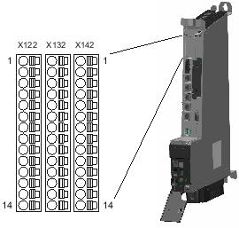

An den 14-poligen Frontsteckern X122 / X132 / X142 können über digitale Ein- und Ausgänge die Aktoren und Sensoren angeschlossen werden. Die Schnittstellen sind fest zugeordnet:
Es gibt folgende digitale Ein-/Ausgänge:
Digitale Eingänge
Digitale Ausgänge
Bidirektionale digitale Ein-/Ausgänge
Die Zuordnung der Ein-/Ausgänge zu Funktionen ist frei parametrierbar. Über die digitalen Eingänge werden die Freigaben für die an der NCU angeschlossenen Antriebe und Motoren geschaltet. Es können z. B. auch Messtaster-Eingänge (nur schnelle Eingänge) und Nockenausgänge angeschlossen werden.
Mit der Antriebsgerätekonfiguration werden die Klemmen auf der NCU vorbelegt.
In den folgenden Tabellen sind die Klemmenbelegungen für die Klemmleisten X122, X132, X142 aufgelistet.